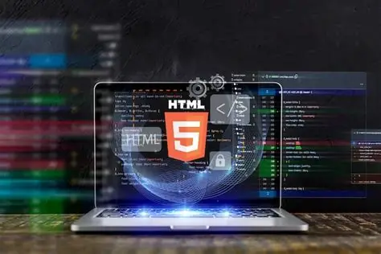

En esta asignatura llamada Tics nos enseñara el uso del bloq de notas, su uso para las etiquetas html y la propia creación de sitios/paginas web e incluso la función de cada etiqueta que incluso aparece en nuestros sitios favoritos cuando necesitamos entretenernos o informarnos de cualquier cosa que nos rodea tambian nos ayuda a conocer los componentes de nuestras pc como seria la ram, el discos duro y etc.. algunos ejemplos de etiquetas html que pueden ser usadas en nuestro bloc de notas son:esta materia nos sirve para la mayoria de carreras de ingeneria porque nos pediran programar con lo que sepamos y más si nos aprendemos las etiquetas que se usan en el bloc de notas o a futuro el css el otro programa para poder hacer la programación y el diseño de paginas web
- "html": nos sirve para dar inicio a nuestra pagina/sitio web
- "head junto title": nos sirve para darle un nombre a la pagina web lo que seria la parte superior siendo la url nos define el titulo de la pagina
- "ol o ul type": nos sirve para hacer un enlistado ejemplo el "ol type nos serviria para cuando nos de una sucesión de pasos como una receta de cocina o unas intrucciones para una tarea/trabajo este tipo de lista podemos usarlo con estos tipos de caracteres siendo los siguientes: "1,a,A,l" como la sucesión de numeros o el abedecario que va de A a la z mientras de la "ul type" nos sirve para hacer un enlista sin ningun orden ejemplo seria cuando nos den una lista de compras sin ningun orden solo esta hecha este tipo de lista seran puestas por los siguientes caracteres: "circles or disc or square" al solo ser figuras geometricas ya que no siguen ningun orden
- "b": nos sirve para poner las letras en negritas a lo que queremos ejemplo seria un texto
- "h1": nos sirve para darle el tamaño a un texto dependiendo del numero si es menor hace la letra más grande y viceversa
- "pre": nos sirve para que ponga nuestro texto donde queremos ejemplo poner una oración y querer continuar debajo sin tener que poner el "p" que nos ayuda a hacer un salto de linea o mejor dicho un "enter"
